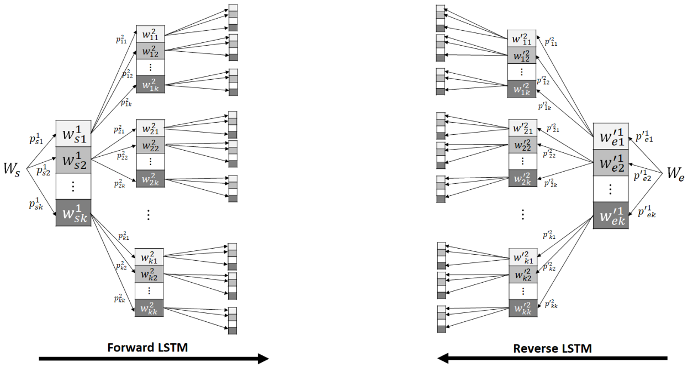
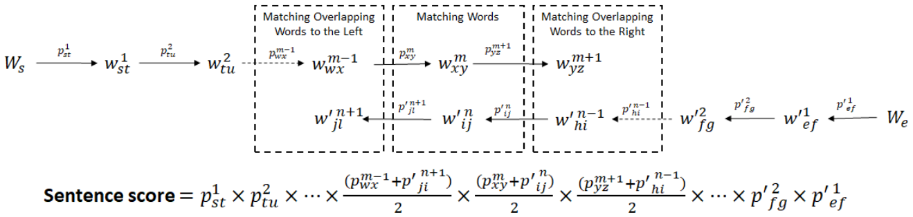

Turning a few keywords into a sentence with two word predictors that meet in the middle
Many systems know what is in a picture or a conversation, but only as a handful of keywords, such as the objects, places, actions or attributes in an image. Turning those keywords into a natural sentence is harder than it looks, especially when there is no ready-made schema or language model to lean on. We trained two word-prediction networks, one reading sentences forwards and one backwards, and built sentences from the places where their guesses meet.
The problem
Systems such as virtual assistants, chatbots, question answering systems and caption generators are often built on top of other systems that hand over information as keywords. Without a proper schema, it can be hard to predict the sentence that should reach the user. Older approaches paired language models with probabilistic graphical models or statistical models of word sequences. We wanted a method that learns from caption text and does not need a schema describing the sentence in advance.
The idea
We use a type of network called an LSTM (long short-term memory), which reads a sentence word by word and keeps a memory of what came before. Given the words so far, it gives a probability for each possible next word. We trained two of them on the same sentences. The forward LSTM learned the sentences as written. The reverse LSTM learned them back to front. The paper stresses that this Dual-LSTM should not be confused with the common bidirectional LSTM. Both use two networks, one per direction, but they differ in implementation: ours are trained separately and then used to build word trees that are matched against each other.
Take two keywords, Ws and We. We want a short phrase that starts with the first and ends with the second. The forward LSTM starts from Ws and, at each step, keeps its K most probable next words. For each of those it again keeps K words, and so on, up to a depth L. That gives a tree of possible continuations. The reverse LSTM grows a similar tree backwards from We.

A phrase is then found wherever a word in one tree matches a word in the other. We prune these matches by also requiring one extra neighbouring word on each side to overlap, so three words in total appear in both chains. The phrase is scored by multiplying the probabilities of its words, and for the overlapping words we use the average of the forward and reverse probabilities. A full sentence is made by chaining the phrases for each neighbouring keyword pair, and its score is the average of the phrase scores. We try every possible order of the keywords and rank the resulting sentences.

What we found
We trained on 404,207 sentences from the COCO caption data set, with two stacked LSTM layers of 650 units and 650-dimensional Word2Vec word vectors, over 23,000 unique words. We tested on 500 randomly selected images from a different collection, the SBU data set, which we annotated by hand with keywords for objects and scenes. We chose a different training set on purpose, to show that the method scales and is not tied to one corpus.
Three judges independently looked at the top five sentences for each keyword order and picked the best one. They scored four things out of 5. The first score asks how good the sentence is given the keywords. The second asks how well it describes the image. The third compares it with the image's actual caption, and the fourth rates how well the original caption describes the image.
The third score, comparing our best sentence with the actual caption, had a mean of 4.65 (Table I). From these scores we conclude that the system generates sentences that are quite acceptable by human standards. In our conclusion, the generated sentences are much better logically and grammatically than the original captions, and they describe the image in a more generic way than the original captions, which "suffer from the whims of the human mind".
What it does not do
The evaluation is small and relies on people. It covers 500 images, the keywords were annotated by hand, and the scores come from three human judges rather than from an automatic metric. We tested the method on image captioning only, so the question of how it works for other tasks is still open.
The paper names as future work extending the method to tasks other than image captioning, such as human-computer dialogue and question answering, and trying it in other languages.
Sources
The figures and tables listed here are taken from the paper cited at the top of this page; the numbers quoted in the text come from the paper too.
- Figures: Fig. 1, Fig. 4
- Tables: Table I: mean scores from the human judges for the generated sentences and for the original captions
Acknowledgements
This work was partially supported by the project sponsored by SERB, Government of India (order no. SB/S3/EECE/054/2016, dated 25/11/2016). The work was carried out at the Centre for Microprocessor Application for Training Education and Research, CSE Department, Jadavpur University.
How to cite the paper
S Dubey, Swarnendu Ghosh, S Chowdhury, N Das, T Gonçalves, P Quaresma (2019). Caption Generation from Keywords using Probabilistic Dual-LSTM Networks and Dynamic Programming. International Conference on Emerging Technologies for Sustainable Development (ICETSD).